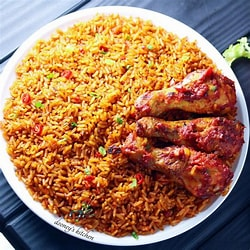

jollof rice

ingredients
- Long-grain parboiled rice: 2 cups (washed and drained)
- Tomatoes: 4 medium (blended)
- Red bell peppers: 2 large (blended)
- Onions: 2 medium (1 blended, 1 sliced)
- Tomato paste: 2-3 tbsp
- Vegetable oil: 1/4 cup
- Garlic and ginger: 2 cloves garlic, 1 tsp ginger (minced or blended)
- Bay leaves: 2
- Curry powder: 1 tsp
- Thyme: 1 tsp
- Paprika: 1 tsp
- Stock cube: 1-2 (chicken or vegetable flavor)
- Salt: to taste
- Black pepper: 1/2 tsp
- Chicken stock: 2-3 cups (or water if unavailable)
- Fresh vegetables: 1/2 cup green peas or diced carrots (optional)
- Fried or grilled chicken, beef, or fish for serving
- Fried or grilled chicken, beef, or fish for servingGreen onions or parsley: Chopped (optional)
- Green onions or parsley: Chopped (optional)
- Fried plantains: As a side dish (optional)
steps to cook
- Heat vegetable oil in a large pot over medium heat.
- Add sliced onions and sauté until soft.
- Stir in the tomato paste and fry for 2-3 minutes.
- Add the blended mixture of tomatoes, red bell peppers, garlic, ginger, and onion. Fry the mixture, stirring occasionally, until the oil separates from the sauce (about 10-15 minutes).
- Add curry powder, thyme, paprika, bay leaves, stock cube, salt, and black pepper. Stir well and let the flavors combine.
- Pour the washed rice into the pot and stir it into the sauce until well coated.
- Add chicken stock (or water) to the pot until it just covers the rice.
- Stir, reduce the heat to low, and cover the pot with a tight-fitting lid or aluminum foil to trap steam.
- Allow the rice to cook for 20-30 minutes, stirring occasionally to prevent sticking. Add more stock or water in small amounts if needed.
- HeatIf using vegetables, stir them in during the last 5 minutes of cooking.
- HeatCheck for seasoning and adjust with salt or spices if necessary.
- HeatOnce the rice is fully cooked and fluffy, remove from heat and discard bay leaves.
- HeatServe hot, garnished with green onions or parsley.
- HeatPair with fried plantains, coleslaw, or your choice of protein.
enjoy your meal